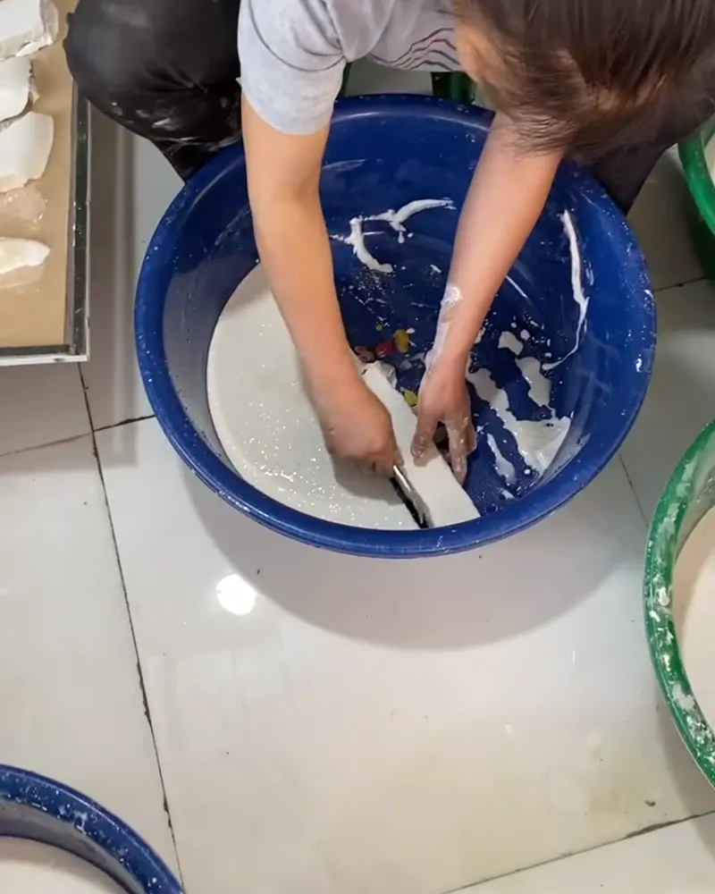

Bột sắn dây khi chín sẽ trong và sánh mịn, rất hợp làm chè và món tráng miệng mát. Nguyên tắc chung cho mọi món: luôn hoà bột với nước lạnh trước rồi mới đổ vào nồi đang sôi, khuấy đều tay để không vón cục.
1. Chè sắn dây hạt sen
Nguyên liệu (4 bát): 100g hạt sen tươi hoặc khô, 40–50g bột sắn dây, 80–100g đường phèn, 1 lít nước, vài giọt nước hoa bưởi nếu thích.
- Hạt sen khô ngâm 2–3 tiếng, bỏ tim. Ninh hạt sen với 1 lít nước đến khi chín mềm.
- Cho đường phèn vào, khuấy tan.
- Hoà bột sắn dây với khoảng 150ml nước lạnh, khuấy tan hết.
- Hạ lửa nhỏ, vừa đổ từ từ bột vào nồi vừa khuấy đều một chiều, đến khi chè chuyển trong và sánh thì tắt bếp.
- Để nguội, thêm vài giọt nước hoa bưởi. Ăn nóng hoặc ăn lạnh đều ngon.
2. Chè đậu xanh sắn dây
Nấu 150g đậu xanh đã cà vỏ với 1,2 lít nước đến khi nhừ, thêm đường vừa ăn. Hoà 40g bột sắn dây với nước lạnh, đổ vào nồi và khuấy ở lửa nhỏ đến khi chè sánh trong. Có thể thêm chút nước cốt dừa khi ăn.
3. Sắn dây sữa
Hoà 1–2 thìa bột sắn dây với ít nước lạnh, rót nước sôi vào khuấy đến khi trong, để nguội bớt rồi thêm sữa tươi hoặc sữa đặc tuỳ khẩu vị. Thêm đá nếu muốn uống lạnh.
4. Thạch sắn dây
Đun 500ml nước với đường vừa ăn. Hoà 50g bột sắn dây với 150ml nước lạnh, đổ vào nồi và khuấy liên tục ở lửa nhỏ đến khi hỗn hợp đặc, trong. Đổ ra khuôn, để nguội rồi cho vào tủ lạnh khoảng 2 tiếng, cắt miếng ăn với nước cốt dừa hoặc mật ong.
Lượng đường và bột chỉ để tham khảo, bạn tăng giảm theo khẩu vị. Muốn món sánh đặc hơn thì tăng bột, muốn lỏng hơn thì tăng nước.